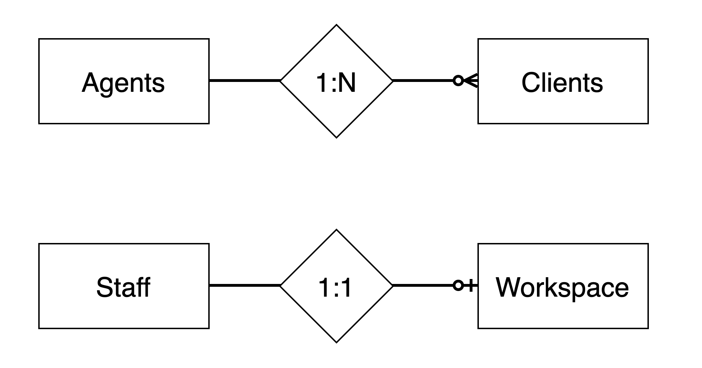

--- # INFO 610 Fall 2020 <div style="text-align:center;font-size: 1.5;line-height:1.8em;">Week 1.5</div> --- # Database Design (Chapter 2) # Why should you be concerned with database design? * Database design is crucial to the consistency, integrity and accuracy of the data in a database. * Inaccurate information is probably the most detrimental result of improper database design * Could adversely affect your organizations bottom line --- # Advantage of Learning a Good Design Methodology * It gives you the skills you need to design a sound database structure. * Avoid duplicate, redundant and invalid data * Guarantees required data and relationships * Organized set of steps and techniques * Put your design mistakes up front before implementation * Reduces time to design * Help you understand your data and domain better --- # Objective of a Good Design * Database supports both required and ad hoc information retrieval * Tables are constructed properly and efficiently * Data integrity is imposed at the field, table and relationship level * Database can support business rules * Database lends itself to future growth --- # Benefits of a Good Design * Database structure is easy to modify and maintain * Data is easy to modify * Information is easy to retrieve * End user applications are easy to develop and build --- # Three primary steps in traditional design * Requirements Analysis * Data modeling * Normalization --- # ER Diagrams * Entity-Relationship modeling * Visual representation of your planned data model * Tables * Table relationships * Relationship characteristics  --- # ER Diagram Connectors <img src="erd_connections.png" width="80%"/> --- # Next week *Normalization ---